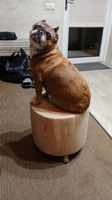

Пти-брабансон – декоративная порода, относящаяся к группе малых бельгийских собак. Ласковые и любознательные, брабантские гриффоны сильно привязываются к своим хозяевам.
© «Lapkins.ru»
- умница
- красавица
- любимица
Происхождение
- Пти брабансон (от фр. petit brabançon — малый брабансон), он же брабантский или гладкошерстный гриффон — европейская декоративная порода небольших собак. Их родиной является Бельгия, а именно провинция Брабант, которой они и обязаны своим именем. Есть версия, что порода была выведена придворными конюхами. Ее «основой» стала бельгийская жесткошерстная конюшенная собака, скрещенная с немецким аффенпинчером, мопсом и кавалер-кинг-чарльз-спаниелем. От последнего ей достался нарядный окрас, от мопса — мягкая и гладкая шерсть, а аффенпинчер дополнил экстерьер.
Характер и поведение
- Пти брабансоны очень умные, чувствительные и доброжелательные собаки. Они становятся прекрасными компаньонами для хозяев и всех членов семьи, в которой живут. Природная активность и веселый нрав делают их отличными друзьями для детей, с которыми они всегда охотно играют.